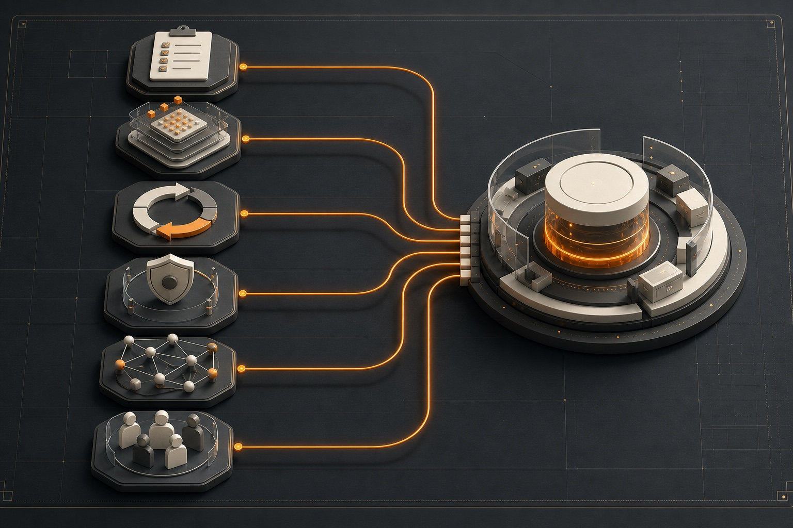

Welches Problem soll spürbar leichter werden?
Wir beginnen bei einer wiederkehrenden Aufgabe mit festgelegter Zielgruppe, erkennbarem Nutzen und einem prüfbaren Ergebnis.
Wir bringen KI aus der Idee in den Alltag: konkreter Nutzen, geeignete Daten, Datenschutz, Qualität und Risiko.
Ein kurzer Überblick reicht. Wir melden uns werktags innerhalb von 24 Stunden.
Ein KI-Vorhaben wird sinnvoll, wenn der Anwendungsfall, die verfügbare Wissensbasis und die Verantwortung zusammenpassen. Deshalb beginnen wir klein, prüfen die Daten und testen Ergebnisse im Arbeitsalltag, bevor die Lösung breiter eingesetzt wird.
Vier typische Stolpersteine — und worauf es deshalb von Beginn an ankommt:
Ein Werkzeug allein löst kein Geschäftsproblem. Erst wenn Nutzer, Prozess, gewünschtes Ergebnis und Verantwortung feststehen, lässt sich sinnvoll entscheiden, ob KI der richtige Weg ist.
Fehlen gepflegte Dokumentation, zugängliche Quellen oder eine verlässliche Datenbasis, kann KI keine verlässlichen Antworten liefern. Das ist kein technisches Detail, sondern die Grundlage des Vorhabens.
Eine überzeugende Vorführung reicht nicht. Für den Arbeitsalltag braucht es eindeutige Zuständigkeiten, eine passende Einbindung in bestehende Systeme, Schulung und einen Plan für den Betrieb.
Wer prüft die Ergebnisse, wer gibt sie frei und was passiert bei Fehlern? Diese Fragen müssen mit dem Anwendungsfall beantwortet werden — nicht erst nach dem Pilot.
Die sechs Felder verbinden Anforderung, Wissensbasis, Umsetzung und Betrieb. Je nach Anwendungsfall setzen wir unterschiedliche Schwerpunkte.
Wir klären Ziel, Nutzer, Prozess und messbare Erfolgskriterien, bevor ein Werkzeug ausgewählt oder entwickelt wird.
Wir prüfen, ob die benötigten Informationen zugänglich, gepflegt und für den konkreten Anwendungsfall ausreichend sind.
Wir verbinden kurze Lernschleifen mit festen Meilensteinen, damit das Vorhaben flexibel bleibt und trotzdem verlässlich geführt wird.
Verantwortung, Prüfschritte, Freigaben und der Umgang mit Fehlern werden vor der produktiven Nutzung festgelegt.
Wir bauen und testen den fokussierten Piloten, integrieren ihn passend in Ihre Landschaft und bereiten den Betrieb vor.
Wir binden die Menschen ein, die mit der Lösung arbeiten, und führen neue Abläufe, Schulung und Unterstützung gemeinsam im Alltag ein.
Jedes Feld hat eine eigene Aufgabe. Zusammen führen sie von der Anforderung über die geprüfte Wissensbasis bis in einen verantwortungsvoll geführten Betrieb.

Nach der Auswahl eines geeigneten Anwendungsfalls führen wir KI als Produkt- und Veränderungsvorhaben: mit eindeutigen Zuständigkeiten, einer geprüften Wissensbasis, einem abgegrenzten Pilot und einem vorbereiteten Betrieb.
Auftraggeber, Produktverantwortung, Fachbereich, IT, Datenschutz, Recht und Betrieb werden benannt. Früh wird geklärt, wer entscheidet, welches Risiko besteht und wo ein Mensch prüfen oder freigeben muss.
Problem, Nutzergruppe, Prozesskontext, erwarteter Nutzen, Grenzen und Messgrößen werden beschrieben. Der Anwendungsfall wird nur weitergeführt, wenn Nutzen, Aufwand und Risiko zusammenpassen.
Datenquellen, Qualität, Zugriffe, Datenschutz, Informationssicherheit, Einordnung nach der EU-KI-Verordnung und Prüfpflichten werden bewertet. Dadurch entsteht eine verlässliche Grundlage für die technische Umsetzung.
Wir prüfen, ob eine fertige Lösung genügt oder eine eigene Entwicklung sinnvoll ist. Danach legen wir Auswahl, Wissenszugriff, Einbindung in bestehende Systeme, Protokollierung, laufende Überwachung und Freigaben fest.
Eine begrenzte Pilotversion wird mit realistischen Daten und Rückmeldungen der späteren Nutzer geprüft. Vor der Einführung bewerten wir Qualität, typische Fehler, Aufwand, Akzeptanz und Risiken.
Die Einführung erfolgt schrittweise. Schulung, Unterstützung, Freigaben, Kommunikation und Übergabe an den Betrieb werden vorbereitet. Nach dem Start prüfen wir Nutzung und Akzeptanz.
Wir prüfen laufend Qualität, Kosten, Nutzung, Vorfälle und Veränderungen an den Daten. So bleibt die KI-Lösung kontrollierbar und kann gezielt verbessert werden.
Der beste erste Anwendungsfall löst ein echtes Problem und lässt sich auf einer überschaubaren, verlässlichen Wissensbasis prüfen. So entstehen Ergebnisse, die Mitarbeitende nachvollziehen und nutzen können.
Wir beginnen bei einer wiederkehrenden Aufgabe mit festgelegter Zielgruppe, erkennbarem Nutzen und einem prüfbaren Ergebnis.
Dokumentation, Freigaben und aktuelle Quellen müssen vorhanden, zugänglich und ausreichend strukturiert sein. Fehlt das, bereiten wir zuerst die Grundlage vor.
Der Anwendungsfall wird so abgegrenzt, dass Ergebnisse gegen bekannte Quellen, Regeln oder fachliche Entscheidungen geprüft werden können.
In einem Bankprojekt hilft ein KI-Advisor den Mitarbeitenden im Kundenservice, freigegebene Informationen zu wiederkehrenden Kundenfragen schneller zu finden. Das Vorhaben wurde fortgeführt, weil die benötigten Inhalte bereits schriftlich dokumentiert, strukturiert und für den Advisor zugänglich waren.
Der Advisor bearbeitet ausschließlich wiederkehrende, klar abgegrenzte Servicefragen.
Der Advisor nutzt gepflegte, freigegebene und technisch zugängliche Informationen.
Die kurze Antwort bezieht sich direkt auf die Kundenfrage und bleibt anhand der Wissensbasis nachvollziehbar.
Die Servicekraft prüft den Vorschlag und entscheidet, ob und wie sie ihn verwendet.
Für einen verlässlichen Einsatz müssen Nutzen, Daten, Sicherheit, Verantwortung und Betrieb zusammenpassen.
Verantwortlichkeiten, Risikoklasse, menschliche Aufsicht, Dokumentation, Freigaben und Kontrollpunkte werden vor produktiver Nutzung geklärt.
Datenqualität, Berechtigungen, Schutzbedarf, Speicherorte, Schnittstellen und Zugriffskonzepte werden geprüft, bevor ein Modell oder Werkzeug breit genutzt wird.
Wir planen von Anfang an, wie Qualität, Versionen, Kosten und Fehler im laufenden Betrieb geprüft und dokumentiert werden.
Rollen, Schulung, Kommunikation, Unterstützung und feste Abläufe werden vorbereitet, damit die Lösung im Arbeitsalltag sicher und sinnvoll genutzt wird.
Wir prüfen Nutzen, Datenreife, Qualität, Akzeptanz und Betriebsfähigkeit gemeinsam.
Der konkrete Anwendungsfall bestimmt Datenbedarf, Lösungstyp, Prüfprozess und Betriebsmodell. Die fachliche Entscheidung führt die Technologieauswahl.
Ergebnisse werden gegen fachliche Kriterien geprüft. Fehlerbilder, Halluzinationen, Kosten, Laufzeit, Nacharbeit und Nutzerfeedback fließen in die Entscheidung ein.
Datenschutz, Sicherheit, Verzerrungen, Rechte, Nachvollziehbarkeit und menschliche Kontrolle werden dokumentiert und in Freigabewege übersetzt.
Laufende Überwachung, Unterstützung, Verantwortlichkeiten, Verbesserungen und Kostenkontrolle werden vor der Einführung geplant. So bleibt die Lösung auch nach dem Start beherrschbar.
Nach dem Pilot halten feste Prüftermine Qualität, Nutzung, Kosten und offene Risiken sichtbar.
Datenschutz, Sicherheit, rechtliche Vorgaben und menschliche Kontrolle werden von Beginn an mitgeführt.
Antwortqualität, Quellenbezug, typische Fehler, Nacharbeit, Laufzeit und Rückmeldungen werden dokumentiert. Damit lässt sich fundiert entscheiden, ob die Lösung angepasst oder breiter eingeführt wird.
Datenschutz, Sicherheit, Schutzbedarf, menschliche Prüfung, Freigabewege und Einordnung nach der EU-KI-Verordnung werden in die Projektsteuerung aufgenommen.
Wählen Sie die passende Zielgruppe, Technologie oder Branche. Wenn das Vorhaben zusätzlich Prozesse, Projekte, Veränderung oder Architektur betrifft, führen die angrenzenden Beratungsfelder weiter.
Der erste Schritt ist ein Erstgespräch von 30 bis 45 Minuten. Wir klären Anwendungsfall, Datenlage, Verantwortlichkeiten, Risiken und den möglichen Weg in den Betrieb. Danach lässt sich einschätzen, ob ein kurze Prüfung des Anwendungsfalls, Pilotversion oder ein breiteres KI-Vorhaben sinnvoll ist.
Erstgespräch anfragen →Ein KI-Projekt lohnt sich erst, wenn Nutzen, Daten, Risiko, Qualität, Einführung und Betrieb zusammenpassen. Deshalb prüfen wir diese Punkte, bevor Budget und Kapazitäten in die breite Umsetzung fließen.
Wir klären Sponsor, Produktverantwortliche, Fachbereich, IT, Datenschutz, Betrieb und Freigabewege, bevor produktive Nutzung geplant wird.
Datenquellen, Zugriffsrechte, Schutzbedarf, Qualität und Prozessbezug werden geprüft, bevor eine Pilotversion entwickelt wird.
Wir definieren Testkriterien, Fehlerbilder, Nutzerfeedback, Freigaben und menschliche Kontrolle, damit Ergebnisse überprüfbar bleiben.
Laufende Überwachung, Unterstützung, Kostenkontrolle, Umgang mit Vorfällen, Schulung und Verbesserungen werden vor der Einführung geplant.
Johannes Reusch und Hans-Helmut "Hannes" Scheel führen CEx gemeinsam. Beide begleiten Mandate mit ihrem Team persönlich. Senior- und Executive-Erfahrung für Ihr Projekt von Anfang bis Ende.